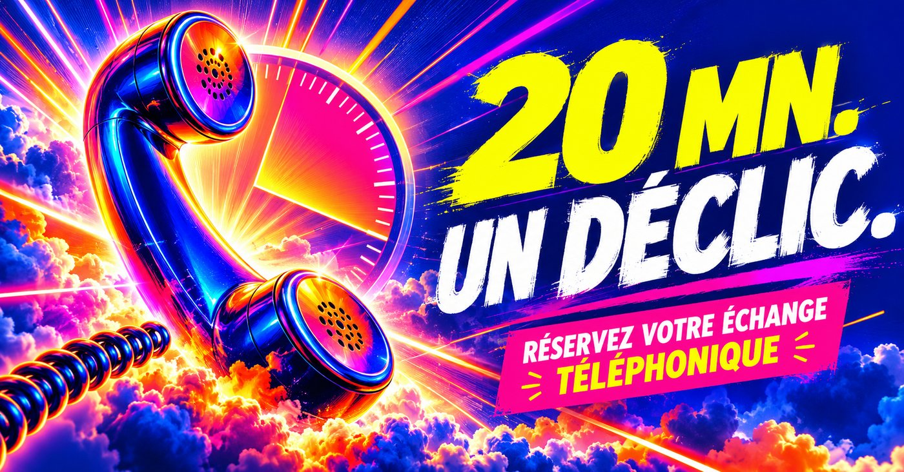

Je révèle votre zone de génie en 20 mn par téléphone.
Vous faites une chose mieux que presque tout le monde. Elle vous paraît normale, alors vous ne la voyez plus. Moi, je l'entends.

Votre talent n'est pas caché. Il est trop près de vous.
Ce qu'on fait sans effort, on le croit à la portée de tous. Alors on passe sa vie à travailler ses points faibles, à cocher des cases, à faire bien des choses qui nous vident.
Pendant ce temps, le truc qui vous fait oublier l'heure reste dans un coin. Personne ne vous l'a jamais nommé. Vous non plus.
Il suffit parfois que quelqu'un l'entende et vous le dise.
Comment ça marche
Vous choisissez un créneau
Rien à préparer. Pas de formulaire de trois pages. Juste un moment où vous pouvez parler sans être dérangé.
Vous parlez, j'écoute
Ce que vous faites, ce qui vous épuise, ce qui vous fait oublier l'heure. J'écoute surtout ce que vous dites vite, en passant, comme si ce n'était rien.
Je vous dis la phrase
À la fin, je vous dis ce que j'ai entendu. En une phrase. Celle que vous pourrez noter, relire, et sur laquelle bâtir la suite.
Pour qui ?
Les dirigeants qui réussissent mais sentent qu'ils jouent un peu à côté. Les indépendants qui vendent tout sauf ce qu'ils font de mieux. Les salariés à un virage, qui ne savent plus par où repartir.
Et tous ceux à qui on répète « tu devrais faire ça » sans jamais savoir dire ce que c'est, ça.
Ce que ce n'est pas
Pas un test de personnalité. Pas une séance de coaching sur six mois. Pas une thérapie.
C'est une conversation. Courte, franche, et qui vous laisse avec quelque chose de concret.
Thierry Garot. 20 ans à le faire sans l'avoir cherché.
Avec des associés, des salariés, des inconnus croisés sur un salon. Ils repartaient avec une évidence qu'ils n'avaient pas en arrivant. On a dû me le répéter longtemps avant que je le prenne au sérieux.
Entrepreneur depuis 30 ans. Né à Abidjan. Mon père, directeur technique d'une usine, a tout perdu en 1976 pour avoir soutenu ses ouvriers en grève, puis il a tenu une cordonnerie pendant 30 ans. Ma mère était institutrice, elle a vu passer plus de 2 000 enfants.
J'ai appris chez eux qu'on peut tout perdre, sauf ce qu'on sait faire. C'est ce « ce qu'on sait faire » que je vais chercher chez vous.
TOP 100 Handicap France
Une phrase. Par écrit. Le jour même.
Après l'appel, vous recevez votre zone de génie formulée noir sur blanc, avec ce qui m'a mis sur la piste et un premier pas concret. De quoi la relire, la montrer, et décider quoi en faire.
Exemple fictif, pour vous montrer la forme.
Vous rendez simple ce qui fait peur aux autres.
Trois fois, vous avez dit « c'était pas si compliqué » en parlant d'un dossier que toute votre équipe fuyait. Vous ne vous en vantez pas. Vous ne le remarquez même plus.
Cette semaine, prenez le dossier que personne ne veut. Notez le temps qu'il vous faut pour le démêler. C'est là que vous valez le plus cher.
Thierry

Un appel de 20 minutes, en tête à tête. À la fin, votre zone de génie formulée en une phrase, que je vous envoie aussi par écrit.
Je réserve sur WhatsAppCe que je fais pour une personne, je le fais pour une équipe.
Une équipe aussi a sa zone de génie. Souvent, personne ne l'a jamais dite à voix haute. Alors on vend ce qu'on croit devoir vendre, on se répartit les rôles par habitude, et on passe à côté de ce qu'on fait mieux que les concurrents.
Réunions commerciales
J'interviens dans votre réunion d'équipe ou votre séminaire de vente. Chacun repart en sachant ce qu'il fait mieux que les autres, et l'équipe sait enfin ce qu'elle vend vraiment.
Comités de direction
En petit comité, autour de la table. J'écoute comment vous parlez de votre entreprise, de vos choix, de vos blocages, et je vous dis ce que j'entends. Sans détour, et sans rapport de cinquante pages.
Conseil de dirigeants
Pour un dirigeant qui veut un regard extérieur dans la durée. Trente ans d'entrepreneuriat, des réussites et des chutes : je sais ce que c'est d'être seul à décider.
Les questions qu'on me pose
20 minutes, ça suffit vraiment ?
Pour trouver, oui. Ce qui prend du temps, c'est de le croire. Ça, c'est votre travail après l'appel.
Je dois préparer quelque chose ?
Non. Plus vous arrivez sans texte appris, mieux c'est. Ce qui m'intéresse, c'est ce qui sort sans que vous le décidiez.
Et si je ne suis pas d'accord avec ce que vous me dites ?
Alors on en parle. Mais je vous préviens : la phrase qui vous fait tiquer est souvent la bonne.
Ce qu'on se dit reste entre nous ?
Oui. Rien n'est enregistré, rien n'est partagé.